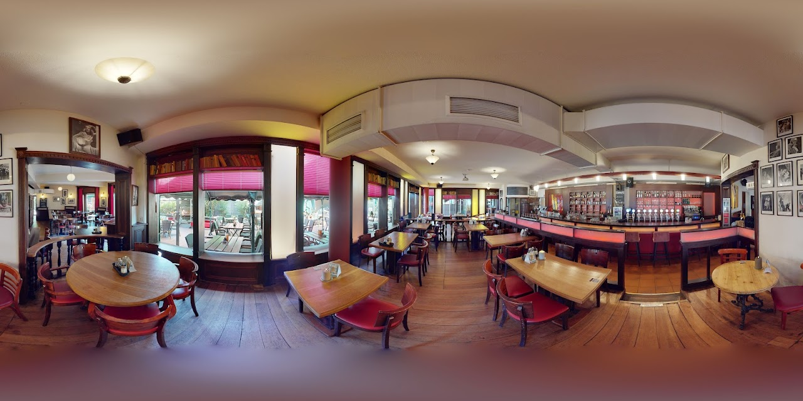

Ratgeber › Sichtbarkeit
Virtuelle Tour in Google Maps und Street View einbinden
Eine virtuelle Tour auf der eigenen Website ist gut. Eine virtuelle Tour im Google-Unternehmenseintrag ist besser – weil sie dort auftaucht, wo Menschen tatsächlich nach dir suchen, bevor sie deine Website überhaupt kennen.

Warum die Google-Einbindung den Unterschied macht
Der typische Weg zu einem Restaurant, Fitnessstudio oder Büro führt heute nicht über die Website, sondern über eine Suche bei Google oder in Google Maps. Wer „italienisches Restaurant Winterhude" eingibt, sieht eine Liste mit Einträgen, Bewertungen und Fotos. Erst danach – vielleicht – klickt jemand auf die Website.
Genau an dieser Stelle setzt die Einbindung an. Ist die Tour im Unternehmensprofil hinterlegt, erscheint im Fotobereich ein zusätzliches Symbol für den 360-Grad-Rundgang. Interessenten können das Innere erkunden, ohne den Google-Eintrag zu verlassen. Das verlängert die Verweildauer im Profil und beantwortet die entscheidende Frage – „sieht es da drin gut aus?" – bevor jemand weiterscrollt zur Konkurrenz.
Die Voraussetzungen
Damit die Tour bei Google landen kann, müssen drei Dinge erfüllt sein:
- Ein bestätigtes Google-Unternehmensprofil. Das Profil muss existieren und verifiziert sein – üblicherweise per Postkarte, Telefon oder E-Mail. Ohne Verifizierung lassen sich keine 360-Grad-Inhalte hinzufügen.
- Zugriff auf das Profil. Entweder du hinterlegst die Tour selbst, oder du erteilst temporär Verwaltungsrechte. Beides funktioniert.
- Eine Tour im passenden Format. Matterport-Touren lassen sich in das von Google benötigte Panoramaformat überführen. Das ist ein Verarbeitungsschritt, kein Neu-Fotografieren.
Der häufigste Stolperstein ist Punkt eins. Viele Betriebe haben zwar einen Google-Eintrag, aber er wurde nie beansprucht und verifiziert – er entstand automatisch aus Nutzerdaten. Solange das so ist, lässt sich nichts hinzufügen. Die Beanspruchung ist kostenlos und dauert in der Regel wenige Tage.
Der Ablauf in der Praxis
Profil prüfen
Wir schauen gemeinsam, ob dein Unternehmensprofil bestätigt ist und ob Adresse, Öffnungszeiten und Kategorie stimmen. Fehlerhafte Grunddaten schwächen die gesamte lokale Sichtbarkeit.
Aufnahme
Der Scan vor Ort ist derselbe wie für die reguläre Tour. Es braucht keinen zweiten Termin und keine separate Technik.
Aufbereitung & Upload
Die Panoramen werden aus dem 3D-Modell abgeleitet, korrekt verortet und in das Profil hochgeladen. Die Zuordnung zur Adresse erfolgt über die Geokoordinaten.
Freigabe durch Google
Google prüft die Inhalte automatisiert. Bis der Rundgang öffentlich sichtbar ist, vergehen üblicherweise einige Tage.
Was die Einbindung nicht leistet
Ehrlichkeitshalber: Eine 360-Grad-Tour im Google-Profil ist kein direkter Ranking-Faktor. Google stuft dich nicht allein deshalb höher ein, weil ein Rundgang hinterlegt ist. Die Wirkung ist indirekter, aber deswegen nicht kleiner:
- Höhere Interaktionsrate. Nutzer, die mit deinem Profil interagieren – Fotos ansehen, den Rundgang öffnen, auf die Website klicken – senden Signale, die Google durchaus auswertet.
- Bessere Vorqualifizierung. Wer die Räume gesehen hat, kommt mit realistischen Erwartungen. Das reduziert Enttäuschungen und damit indirekt auch schlechte Bewertungen.
- Abgrenzung zum Wettbewerb. In den meisten Branchen haben nur wenige lokale Anbieter einen Rundgang hinterlegt. Das Symbol fällt in der Ergebnisliste auf.
Einbindung auf der eigenen Website
Parallel zur Google-Variante gehört die Tour auf deine Website. Technisch ist das unkompliziert: Du bekommst einen iFrame-Code, den du an beliebiger Stelle einfügst. Er funktioniert in praktisch jedem Content-Management-System – WordPress, Wix, Jimdo, Squarespace, Shopify oder handgebaute Seiten.
Zwei Hinweise aus der Praxis: Platziere die Tour möglichst weit oben, idealerweise direkt auf der Startseite. Und verlinke sie zusätzlich aus dem Menü. Eine Tour, die nur über einen Unterpunkt namens „Galerie" erreichbar ist, wird von den meisten Besuchern schlicht nicht gefunden.
Und was ist mit der Ladezeit?
Eine berechtigte Sorge – Ladezeit ist ein echter Ranking-Faktor. Die gute Nachricht: Die Tour wird von Matterport ausgeliefert, nicht von deinem Server. Der eingebettete iFrame lädt erst, wenn er in den sichtbaren Bereich kommt. Auf die Kernladezeit deiner Seite hat er dadurch nur geringen Einfluss.
Kosten
Die Google-Einbindung ist bei mir eine optionale Zusatzleistung zur regulären Tour – es fällt kein separater Aufnahmetermin an. Details zum Leistungsumfang findest du unter Leistungen & Preise, konkrete Beispiele in den Referenzen.
Wenn du wissen willst, ob dein Google-Profil die Voraussetzungen erfüllt: Schick mir den Namen deines Betriebs über das Kontaktformular, ich schaue kurz nach und sage dir, was zu tun wäre.
Tour bei Google sichtbar machen?
Ich prüfe dein Unternehmensprofil und sage dir, was für die Einbindung nötig ist.
Unverbindlich anfragen